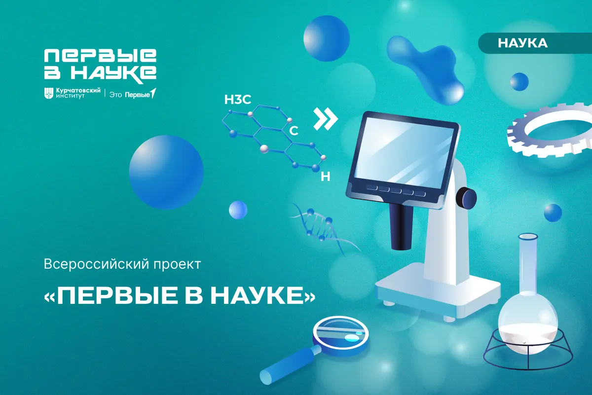
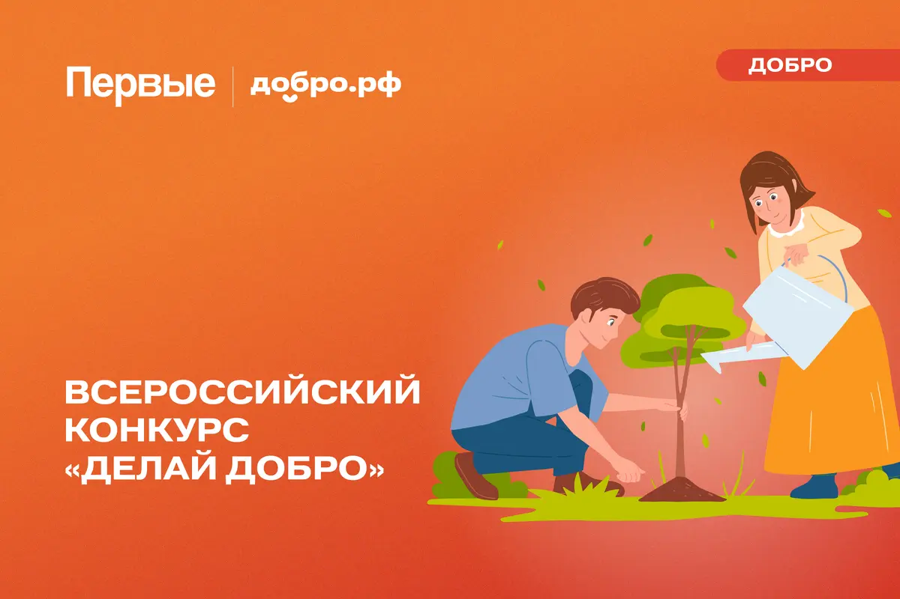
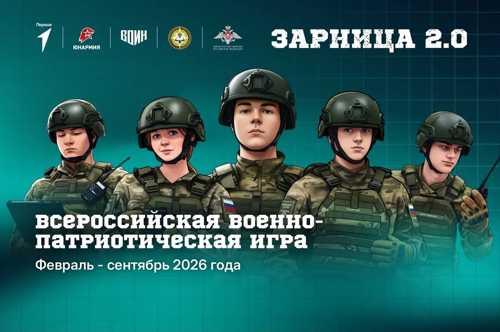
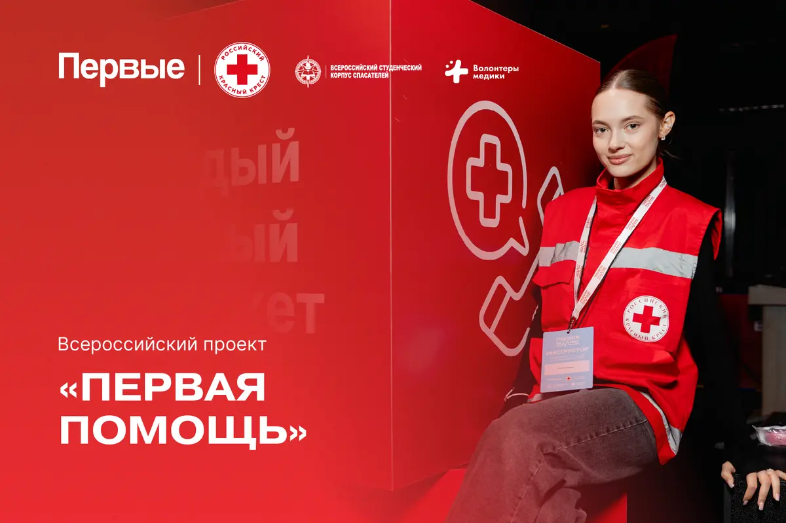

Проекты и события Движения Первых
Всероссийский проект «Школьная классика»

Всероссийский проект «Первые в науке»
Всероссийский проект «Хранители истории»

Всероссийский конкурс "Делай добро"

Всероссийская военно-патриотическая игра «Зарница 2.0»
